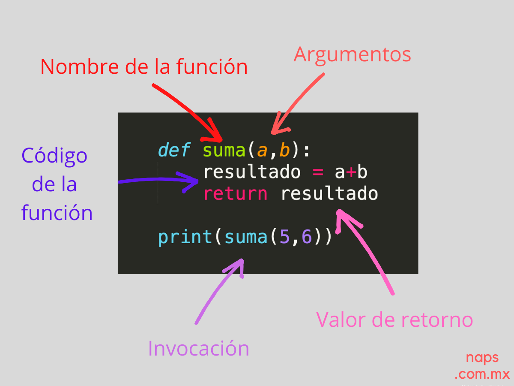

Funciones en Python
Una función es un bloque de código reutilizable que realiza una tarea concreta.

Definición de funciones:
def nombre_funcion(parametros):
# Cuerpo de la función
return resultadoUso de funciones:
resultado = nombre_funcion(argumentos)Listas y diccionarios
Las listas y diccionarios permiten almacenar colecciones de datos. Son estructuras de datos fundamentales en Python.
Tipos de estructuras de datos:
- Listas: ordenadas y mutables.
mi_lista = [1, 2, 3, "cuatro"]mi_diccionario = {"clave1": "valor1", "clave2": "valor2"}Listas: declaración y acceso
Una lista está definida por corchetes [] y puede contener elementos de cualquier tipo.
Ejemplo:
mi_lista = [1, 2, 3, "cuatro"]
print(mi_lista[0]) # Imprime el primer elemento (1)
print(mi_lista[3]) # Imprime el cuarto elemento ("cuatro")Recorrido de listas: Se utiliza un bucle for
for elemento in mi_lista:
print(elemento)Operaciones con listas:
mi_lista.append(5) # Agrega un elemento al final de la lista
mi_lista.remove(2) # Elimina el elemento 2 de la lista
print(mi_lista) # Imprime la lista actualizadaDiccionarios: declaración y acceso
Un diccionario está definido por llaves {} y contiene pares clave–valor.
Ejemplo:
mi_diccionario = {"clave1": "valor1", "clave2": "valor2"}
print(mi_diccionario["clave1"]) # Imprime el valor asociado a "clave1"
print(mi_diccionario["clave2"]) # Imprime el valor asociado a "clave2"Recorrido de diccionarios: Se utiliza un bucle for
for clave, valor in mi_diccionario.items():
print(clave, valor)Operaciones con diccionarios:
mi_diccionario["clave3"] = "valor3" # Agrega un nuevo par clave–valor
print(mi_diccionario["clave3"]) # Imprime el valor asociado a "clave3"Entrada y salida por consola
Para probar la entrada y salida por consola, puedes ejecutar el siguiente código en tu entorno de desarrollo:
La función input() permite al usuario ingresar datos por consola, mientras que print() muestra información en la consola.

Manejo de archivos
Python permite leer y escribir archivos de texto usando open()
y la estructura with.
Ejemplo de escritura en un archivo:
# Escribir en un archivo
with open("archivo.txt", "w") as archivo:
archivo.write("Hola, mundo!")Ejemplo de lectura de un archivo:
# Leer un archivo
with open("archivo.txt", "r") as archivo:
contenido = archivo.read()
print(contenido) # Imprime el contenido del archivo